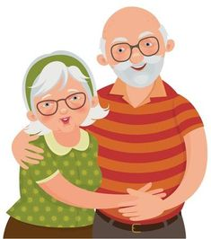

É muito comum a descriminação que pessoas com mais de 50 anos começam a sofrer, com comentários desnecessários como: "Você está velho demais para isso!", " Velho tem que ficar em casa" ou "Velho só dá trabalho “, essa discriminação passou a ser chamada de etarismo.“Aqui no Brasil os dados também mostram que o etarismo começa até mesmo antes das pessoas chegarem à terceira idade: 16,8% dosbrasileiros com mais de 50 anos já se sentiram vítima de algum tipo de discriminação por estarem envelhecendo” essa exclusão afeta a saúde mental, já que pessoas mais velhas recebem sinais de não aceitação, humilhações, falta de respeito, desprezo simplesmente pelo fato deterem envelhecido.
Por isso que em um ambiente escolar , nos devemos ter respeito e empatia com o aluno mais velho , ele requer mais paciencia e cuidado , ja que sofrem a discriminaçao ate mesmo antes de entrar na escola, acolha eles para que eles nao se sintam sozinhos nesse mundo "novo" , trate-os como voce gostaria que seus pais e avos fossem tratados em um ambiente escolar . 